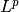
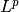

uniform_discr_fromdiscr¶
-
odl.discr.lp_discr.uniform_discr_fromdiscr(discr, min_pt=None, max_pt=None, shape=None, cell_sides=None, exponent=2.0, interp='nearest', impl='numpy', **kwargs)[source]¶ Return a discretization based on an existing one.
The parameters that are explicitly given are used to create the new discretization, and the missing information is taken from the template space. See Notes for the exact functionality.
Parameters: discr :
DiscreteLpUniformly discretized space used as a template.
min_pt : float or sequence of floats, optional
Minimum corners of the desired function domain.
max_pt : float or sequence of floats, optional
Maximum corners of the desired function domain.
shape : int or sequence of ints, optional
Number of samples per axis.
cell_sides : array-like, optional
Side length of each cell.
exponent : positive float, optional
The parameter
 in . If the exponent is not
equal to the default 2.0, the space has no inner product.
in . If the exponent is not
equal to the default 2.0, the space has no inner product.interp : string or sequence of strings, optional
Interpolation type to be used for discretization. A sequence is interpreted as interpolation scheme per axis.
‘nearest’ : use nearest-neighbor interpolation
‘linear’ : use linear interpolation
impl : string, optional
Implementation of the data storage arrays. See
nodes_on_bdry : bool or sequence, optional
Specifies whether to put the outmost grid nodes on the boundary of the domain.
If a sequence is provided, it determines per axis whether to place the last grid point on the boundary (
True) or shift it by half a cell size into the interior (False). In each axis, an entry may consist in a single boolean or a 2-tuple of bool. In the latter case, the first tuple entry decides for the left, the second for the right boundary. The length of the sequence must bediscr.ndim.A single boolean is interpreted as a global choice for all boundaries.
Default:
False.dtype : optional
Data type for the discretized space.
Default for ‘numpy’: ‘float64’ / ‘complex128’
Default for ‘cuda’: ‘float32’
order : {‘C’, ‘F’}, optional
Ordering of the axes in the data storage. ‘C’ means the first axis varies slowest, the last axis fastest; vice versa for ‘F’. Default: ‘C’
weighting : {‘const’, ‘none’}, optional
Weighting of the discretized space functions.
‘const’ : weight is a constant, the cell volume (default)
‘none’ : no weighting
See also
odl.discr.partition.uniform_partition- underlying domain partitioning scheme
Notes
The parameters
min_pt,max_pt,shapeandcell_sidescan be combined in the following ways (applies in each axis individually):- 0 arguments:
- Return a copy of
discr - 1 argument:
[min,max]_pt -> keep sampling but translate domain so it starts/ends at
[min,max]_ptshape/cell_sides -> keep domain but change sampling. See
uniform_partitionfor restrictions.- 2 arguments:
min_pt + max_pt -> translate and resample with the same number of samples
[min,max]_pt + shape/cell_sides -> translate and resample
shape + cell_sides -> error due to ambiguity (keep
min_ptormax_pt?)- 3+ arguments:
- The underlying partition is uniquely determined by the new
parameters. See
uniform_partition.
Examples
>>> discr = odl.uniform_discr([0, 0], [1, 2], (10, 5)) >>> discr.cell_sides array([ 0.1, 0.4])
If no additional argument is given, a copy of
discris returned:>>> odl.uniform_discr_fromdiscr(discr) == discr True >>> odl.uniform_discr_fromdiscr(discr) is discr False
Giving
min_ptormax_ptresults in a translation, while for the other two options, the domain is kept but re-partitioned:>>> odl.uniform_discr_fromdiscr(discr, min_pt=[1, 1]) uniform_discr([1.0, 1.0], [2.0, 3.0], (10, 5)) >>> odl.uniform_discr_fromdiscr(discr, max_pt=[0, 0]) uniform_discr([-1.0, -2.0], [0.0, 0.0], (10, 5)) >>> odl.uniform_discr_fromdiscr(discr, cell_sides=[1, 1]) uniform_discr([0.0, 0.0], [1.0, 2.0], (1, 2)) >>> odl.uniform_discr_fromdiscr(discr, shape=[5, 5]) uniform_discr([0.0, 0.0], [1.0, 2.0], (5, 5)) >>> odl.uniform_discr_fromdiscr(discr, shape=[5, 5]).cell_sides array([ 0.2, 0.4])
The cases with 2 or more additional arguments and the syntax for specifying quantities per axis is illustrated in the following:
# axis 0: translate to match max_pt = 3 # axis 1: recompute max_pt using the original shape with the # new min_pt and cell_sides >>> new_discr = odl.uniform_discr_fromdiscr(discr, min_pt=[None, 1], ... max_pt=[3, None], ... cell_sides=[None, 0.25]) >>> new_discr uniform_discr([2.0, 1.0], [3.0, 2.25], (10, 5)) >>> new_discr.cell_sides array([ 0.1 , 0.25])
# axis 0: recompute min_pt from old cell_sides and new # max_pt and shape # axis 1: use new min_pt, shape and cell_sides only >>> new_discr = odl.uniform_discr_fromdiscr(discr, min_pt=[None, 1], ... max_pt=[3, None], ... shape=[5, 5], ... cell_sides=[None, 0.25]) >>> new_discr uniform_discr([2.5, 1.0], [3.0, 2.25], (5, 5)) >>> new_discr.cell_sides array([ 0.1 , 0.25])